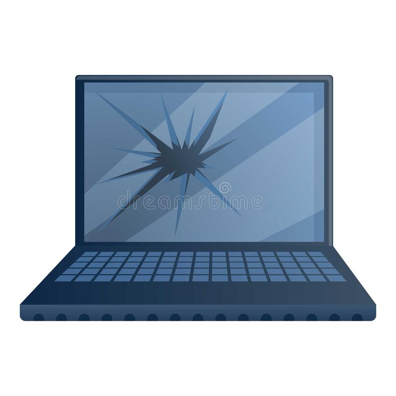

RAMONINF TEC
Home
contato
Post
Pacotes
Posts recentes
BATE PAPO COM PITER PUNK (SLACKPKG)
Como se tornar um membro oficial do Debian (DM ou DD)
Guia DEFINITIVO de Aprendendo a Aprender | A maior BRONCA da sua vida [RATED R]
Entrevista: Samuel Henrique ( Debian Developer )
VARIAS PLACAS DE VÍDEO PRA ABEL FAZER REBALLING !
Interposer QNCT Como Conseguir Passar De 3 Mil Pontos No Benchmark Do CPUZ Mudando Algo No Hardware
Windows 11, INSTALANDO e TESTANDO o novo Sistema Operacional.